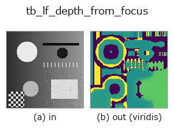

typed op• データ種: lightfield → image
• 呼び出し: fullseye.apply(img, "tb_lf_depth_from_focus", a=0.5, b=0.5) (2-D は 1 画像 + 2 スカラつまみ a,b∈[0,1] のモデル)

*図は合成の入力 128×128 で実際に走らせた出力。左が入力、右が出力。点群は上から見た散布(明るさ = z)、1-D 列は折れ線、体積は z 方向の最大値投影、動画は中央フレーム、複素画像は振幅、絵にならない返り値は値そのもの。*
*出力は viridis 風の疑似カラー(暗い紫 = 小、黄 = 大)。距離・位相・向き・深度のような「量の場」を読むため。*
*つまみ a は出力を変えない(実測: 0.1 / 0.5 / 0.9 で同一)。*
*つまみ b は出力を変えない(実測: 0.1 / 0.5 / 0.9 で同一)。*
段階(前置きの op → この op。左から順):
▸ tb_lf_depth_from_focus: stages (docs site)
別の画像でも(合成シーン / 写真 / 硬貨。上段が入力、下段がその出力。つまみは既定):
▸ tb_lf_depth_from_focus: other inputs (docs site)
リフォーカス走査におけるシャープネスのピークから求めた画素ごとの傾き。
> 以下の詳細説明は原文のままです —— 要約と見出しは訳出済み。
Refocus at every slope in *slopes*, measure local sharpness (*measure*:
`laplacian` = summed modified Laplacian, the classical depth-from-focus
operator; `variance = local variance; gradient` = local gradient
energy) in a `window x window` neighbourhood, and take the slope at which
each pixel is sharpest. With `subpixel=True` (default) the peak is refined
by fitting a parabola through the winning sample and its two neighbours on a
uniformly spaced sweep — on a non-uniform sweep the refinement is
skipped rather than applied with the wrong spacing.
Unbiased where :func:lf_epi_slope is not: measured 2026-09-01 on a
5x5x64x64 synthetic field over a 121-point sweep from -3 to +3, the argmax
landed exactly on the true slope in 18 of 18 combinations (true slopes
0.0, +0.5, +1.0, +1.5, +2.0, -1.0 crossed with texture sigma 1.5 / 3.0 /
5.0 px), and the sub-pixel refinement left every one of them unmoved. Its
resolution, though, is whatever you put in *slopes* — it cannot see a plane
you never refocused on.
Returns `(slope_map, sharpness): the (H, W)` map of estimated slopes
(in px per angular step) and the `(H, W)` peak focus-measure value, which
is the honest confidence — a textureless pixel has no sharpness peak, gets
an essentially arbitrary slope, and its `sharpness` is ~0. Threshold on it
rather than trusting the map everywhere.
Raises `ValueError`: *lf* not a valid light field, *slopes* empty /
over :data:MAX_STACK_SLICES / over :data:MAX_STACK_ELEMENTS / containing
a non-finite or over-large value, an even or non-positive *window*, unknown
*measure* / *interp* / *edge*.
Typed bridge of the lightfield op `lf_depth_from_focus into the 2-D evolution registry: the same implementation, called under the op(v, a, b) convention. This op has no tunable parameter; a and b` are unused.
• サンプルデータ カタログ(DL URL / ライセンス) — 2-D は skimage.data(BSD/public)+ 合成、3-D は実データ源(Stanford/PDS 等)の DL URL。
• 演算子の来歴・参考文献 — この op 族の元になった研究/手法の出典。
下のプログラムは実際に走ることを確かめてある(図と同じ入力)。Studio のヘルプではこのブロックがボタンになり、その場で読み込んで実行できる。
img_to_lightfield 0.50 0.50 tb_lf_depth_from_focus 0.50 0.50
▸ Load this pipeline · Load & run
次の例は元の台帳 op lf_depth_from_focus を呼ぶもの。この橋渡し op は同じ実装を fn(v, a, b) 規約に合わせただけなので、挙動はそのまま当てはまる(呼び出し形だけ違う)。
• lightfield_depth — py -3.11 examples/lightfield_depth.py
• poc_lightfield_depth — py -3.11 examples/poc_lightfield_depth.py
image を入力に取れる)identity · gaussian · mean_box · bilateral · unsharp · median · min_filter · max_filter
typed)tb_points_to_voxel · tb_estimate_point_normals · tb_iss_keypoints · tb_project_points · tb_render_point_depth · tb_statistical_outlier_removal · tb_radius_outlier_removal · tb_voxel_grid_downsample
*Provenance: ops.py — 2D operator registry. この per-op ノートは tools/opdocs.py md が自動生成(手編集しない)。*
© 2026 Kazufumi Furuse — Fullseye operator documentation. Licensed under Apache-2.0.
{kind=link}
{kind=link}